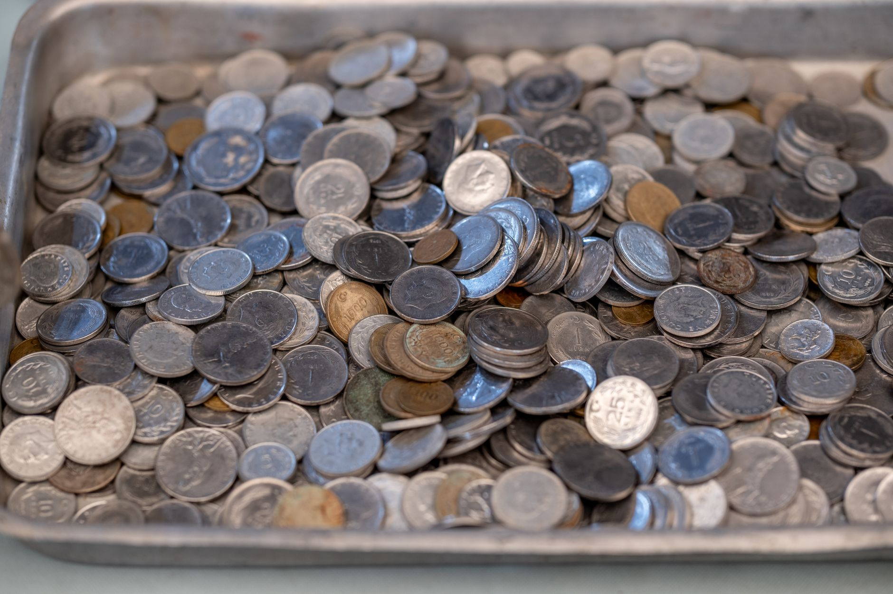

You want to build a physical silver reserve. Fused Distribution makes it straightforward. We ditch the dealer markup games and confusing premiums. You get a clear path to owning silver. Ready to see how simple it is? Explore Fused Reserve.

Why Clean Silver Matters for Value
Silver coins aren’t just pretty pieces of metal; they represent a tangible asset and a potential store of value. However, over time, silver coins inevitably develop a dull appearance due to tarnish, a chemical reaction between the silver and the environment. This tarnish isn’t just unsightly; it can actually diminish the coin’s intrinsic value. The discoloration hides the true luster of the silver, reducing its appeal to collectors and investors. Surface oxidation, the most common type of tarnish, is a thin layer of corrosion that can be easily removed. But deeper, chemical tarnish, caused by exposure to pollutants, humidity, and certain chemicals, requires more careful attention. Understanding the difference between these two types of tarnish is crucial for preserving your investment. Proper cleaning can restore a coin’s brilliance, boosting its value and ensuring it remains a beautiful and valuable piece for years to come. At Fused Distribution, we recommend a gentle, methodical approach to cleaning, prioritizing preservation over aggressive scrubbing.
Identifying Silver Tarnish: Knowing the Difference
Don’t just grab a cleaning solution and start scrubbing. The first step to cleaning silver coins effectively is accurately identifying the type of tarnish present. Surface tarnish, also known as oxidation, appears as a dull, powdery film on the coin’s surface. It’s often caused by exposure to air and pollutants and is relatively easy to remove. You can often wipe it away with a soft, lint-free cloth. However, deeper tarnish, often referred to as “black tarnish” or “chemical tarnish,” is a darker, more stubborn discoloration that penetrates the coin’s surface. This type of tarnish is caused by exposure to sulfur compounds, acids, or other chemicals. It’s far more difficult to remove and requires a more delicate approach. A simple visual inspection can often reveal the difference. If the tarnish appears to be a thin, powdery film, surface oxidation is likely. If it’s a dark, pitted discoloration, chemical tarnish is present. Testing a small, inconspicuous area with a mild baking soda paste (described below) can confirm your suspicions. It’s important to note that different silver alloys react differently to cleaning methods. Sterling silver (92.5% silver) is more susceptible to tarnish than fine silver (99.9% silver).

Simple Steps to Clean Silver Coins: A Gentle Approach
Let’s get to the cleaning itself. The goal isn’t to aggressively polish the coin; it’s to gently remove surface tarnish and reveal the underlying silver. Start with a baking soda paste. Mix one part baking soda with two parts water until you form a thick paste. Dampen a soft, lint-free cloth (microfiber is ideal) with the paste and gently rub the coin in a circular motion. Avoid applying excessive pressure. Work in small, overlapping circles, covering the entire surface. Don’t scrub aggressively; a light touch is key. For light tarnish, this method often works wonders. If the tarnish is more stubborn, you can repeat the process, but be patient. Rinsing is absolutely critical. Use lukewarm water to thoroughly rinse the coin, removing all traces of the baking soda paste. Any residue left behind can accelerate re-tarnishing. After rinsing, dry the coin immediately with a clean, dry microfiber cloth. Don’t use paper towels, as they can scratch the surface. Allow the coin to air dry completely before storing it. This entire process should take no more than 5-10 minutes per coin.
What to Avoid When Cleaning Silver: Protecting Your Investment
Many cleaning methods can damage silver coins, reducing their value significantly. Avoid using harsh chemicals like bleach, ammonia, or vinegar. These substances can etch the silver surface, creating permanent damage. Similarly, avoid abrasive cleaners, scouring pads, and steel wool. These will scratch the coin’s surface, diminishing its luster and value. Never use abrasive brushes. Even gentle scrubbing can remove the coin’s original patina, which is a desirable characteristic for collectors. Furthermore, avoid using hot water. High temperatures can cause the silver to warp or discolor. Finally, never attempt to clean coins that are glued or have other repairs. Cleaning these coins can damage the repairs and further reduce their value. Remember, preserving the coin’s original condition is often more valuable than achieving a perfectly polished surface. Consider this: a lightly tarnished, original coin can be worth significantly more than a heavily polished coin that has lost its original character.
Storing Your Cleaned Silver Safely: Long-Term Preservation
Cleaning your silver coins is only half the battle. Proper storage is essential for maintaining their shine and preventing re-tarnishing. Store your cleaned coins in airtight containers or capsules made of inert materials like plastic or acrylic. Avoid using cardboard or paper, as these can react with the silver and accelerate tarnishing. A desiccant packet, such as silica gel, can help absorb moisture and prevent corrosion. Store your coins in a cool, dry place away from direct sunlight and extreme temperatures. Fluctuations in temperature and humidity can damage the silver and cause it to tarnish. Ideally, store your coins in a dedicated coin album or display case. Avoid stacking coins directly on top of each other, as this can cause scratches and damage. Consider using coin flips to separate individual coins and prevent them from rubbing together. Maintaining a stable environment is key to preserving your silver investment. Research suggests that consistent temperature and humidity control can extend the lifespan of silver coins by decades.
Additional Tips for Silver Coin Care
Beyond the basic cleaning and storage methods, there are a few additional tips that can help you maintain the beauty and value of your silver coins. Regularly inspect your coins for signs of tarnish or damage. Early detection allows you to address minor issues before they become more serious. Handle coins with clean hands to avoid transferring oils and dirt to the surface. Consider using cotton gloves when handling valuable or delicate coins. If you’re concerned about the long-term preservation of your silver coins, you can consult with a professional coin conservator. They can provide expert advice on cleaning, storage, and restoration techniques. At Fused Distribution, we understand the importance of protecting your silver investment. We offer a wide selection of high-quality coin capsules and storage solutions to help you keep your coins safe and beautiful.
Investing in Silver with Fused Distribution
Stop guessing about premiums. Reserve your silver the straightforward way at Fused Reserve. We stock a diverse selection of silver bullion coins and bars, offering competitive pricing and transparent transactions. We ditch the dealer markup games and confusing premiums. You get a clear path to owning silver. We recommend starting with a small investment to familiarize yourself with the market and learn about the benefits of owning physical silver. Our commitment to transparency and customer service ensures a seamless and rewarding experience. Ready to take the first step towards building your silver reserve? Visit Fused Reserve today.
Related
- Does Tarnished Silver Lose Value? A Clear Guide for Investors
- Silver Tarnish: Why It Happens and How to Prevent It
- How To Organize And Inventory Your Silver Collection
Read next: Does Tarnished Silver Lose Value? A Clear Guide for Investors